grain to bread
麦から、パンまで
粉を迎え、生地を休ませ、ゆっくりふくらませて焼く。工程の一つひとつを見守る時間が、パンの味になる。写真はそんな流れをイメージしたものです。

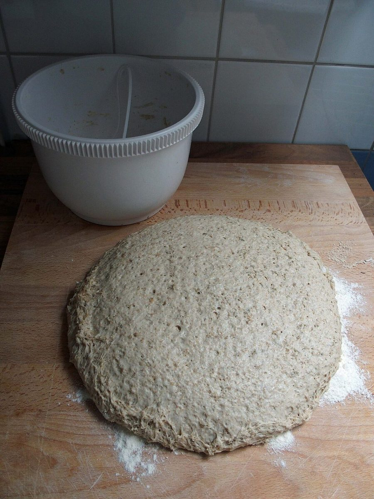
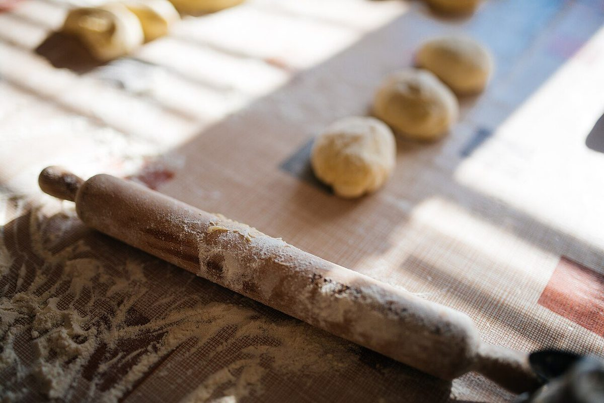

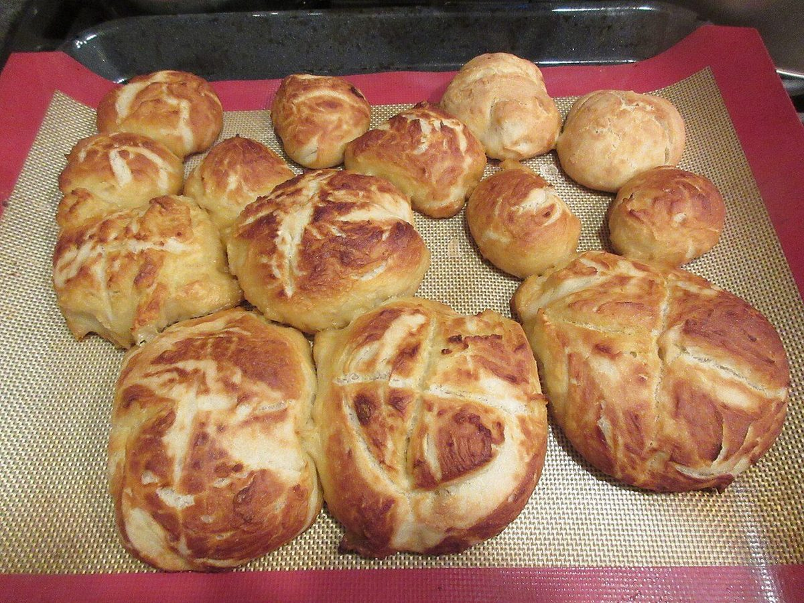
自家製酵母のパン / 奈良県吉野郡天川村
種から麦へ、麦からパンへ。
いのちのつながりを、村の水で焼く。
about
「prana(プラーナ)」は、サンスクリット語で宇宙のエネルギー、すべての命を生かすエネルギーを意味する言葉です。公式ショップでは、種から麦、麦からパンへと、いのちの連なりをつないでいく役目としてパンを焼いていると紹介されています。
国産小麦(製粉したもの)にオーガニックを中心とした材料、天川村の水、きれいな塩を使い、手をかけすぎないシンプルな工程と、低温でじっくりの長時間発酵でつくるそうです。酵母は、パンによって全粒粉のルヴァンやオーガニックレーズン酵母を使い分けています。
工房は古い家の柱を残して改装したパン工房兼アトリエで、見晴らしのよい大きな窓があるそうです(他の方のブログによる)。店主は「生きること」を本職にしたいという考えを話していたと紹介されています。
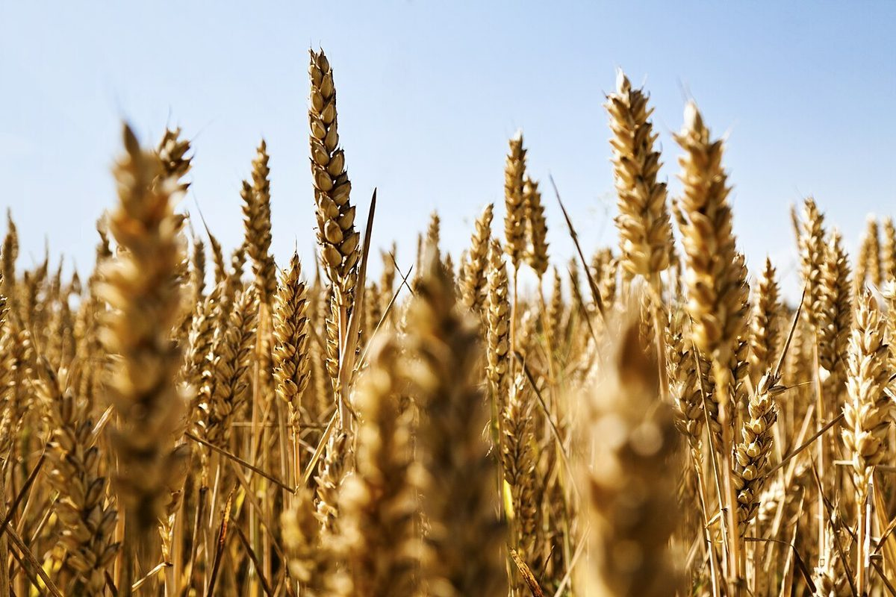
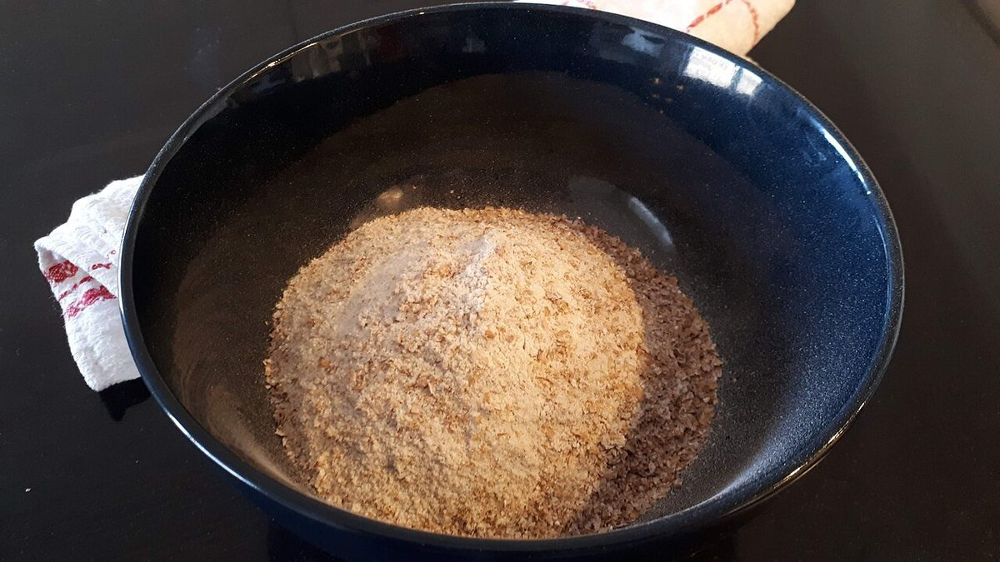
出典は制作メモ(_notes/plan.md)に記録しています。営業日・販売場所の最新情報はInstagramをご確認ください。
bread
公式ショップの記載では、毎日のごはんになるプレーンなパンを少なめの種類で。フォカッチャ、ブリオッシュ、ライ麦、スペルト小麦、いちじくとくるみのパンなども焼いているそうです。土曜は酵母ドーナツなど、日曜はパンの日として案内されています(最新の日程はInstagramで)。下の写真はイメージです。
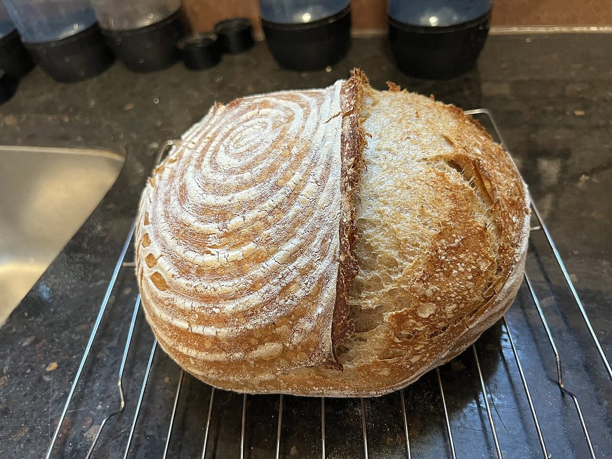
種類・価格は準備中。
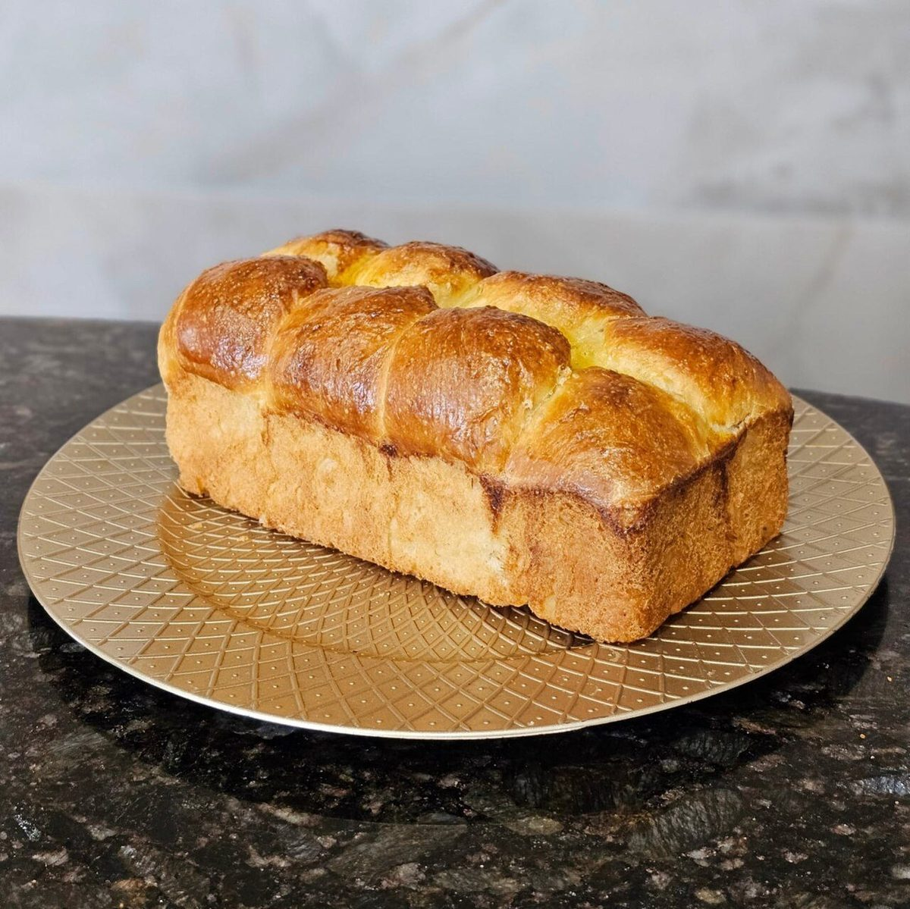
公式ショップに記載のある種類のイメージ。
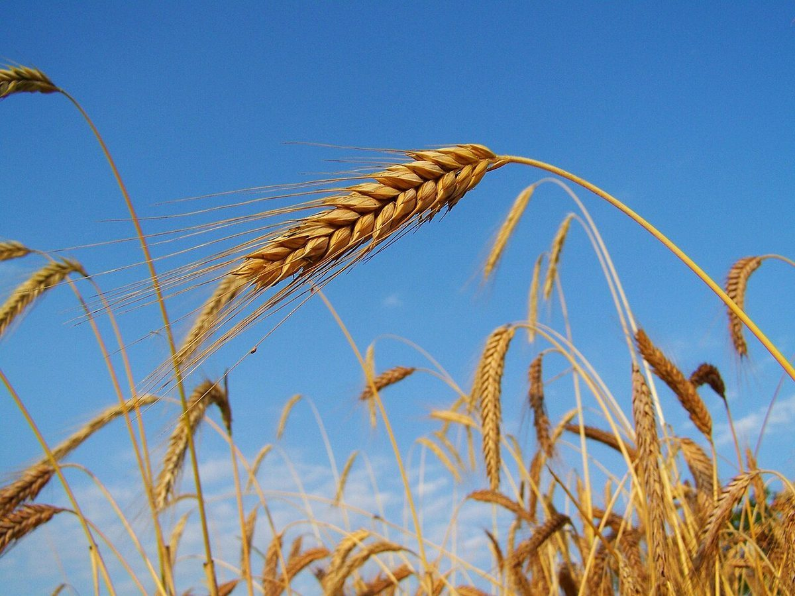
公式ショップに記載のある種類のイメージ。

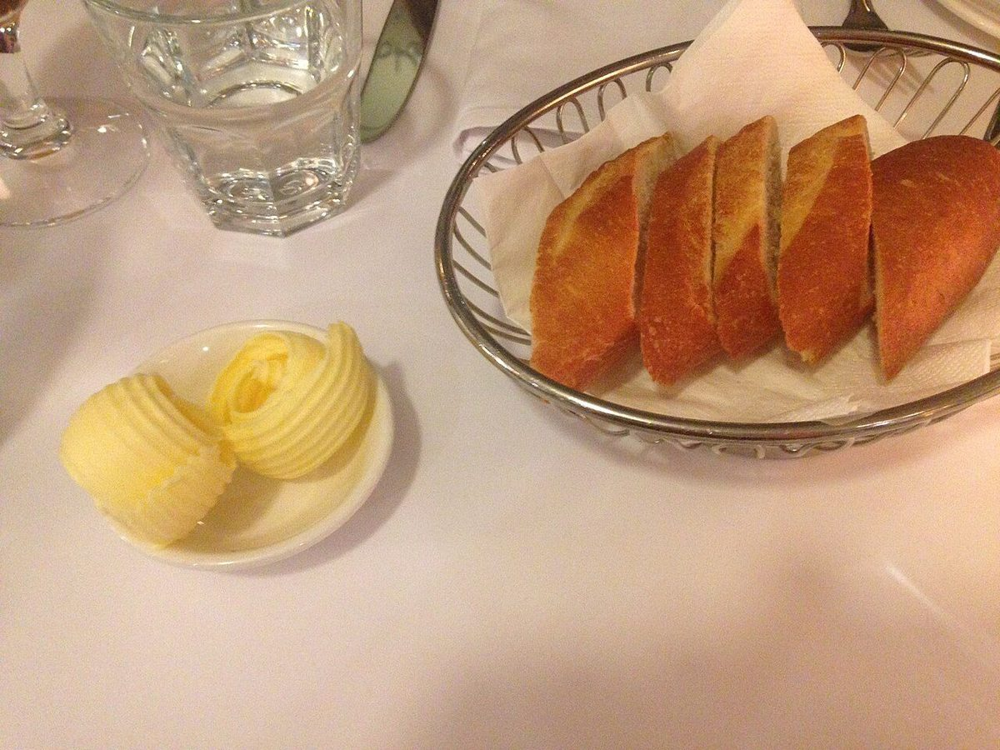
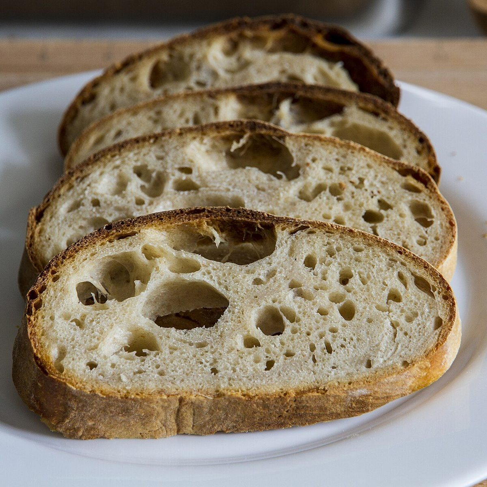
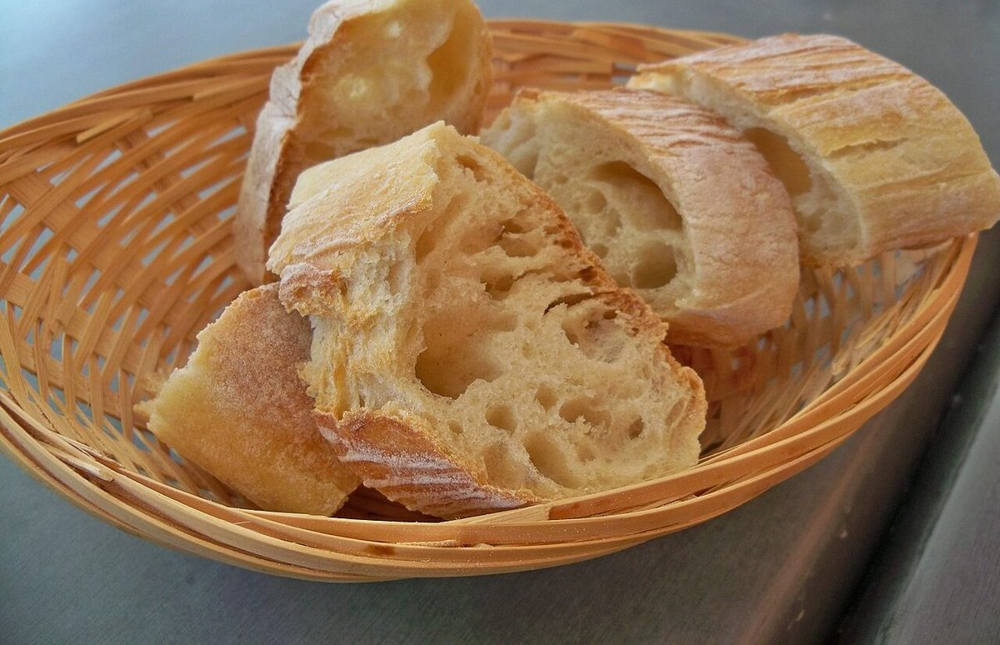
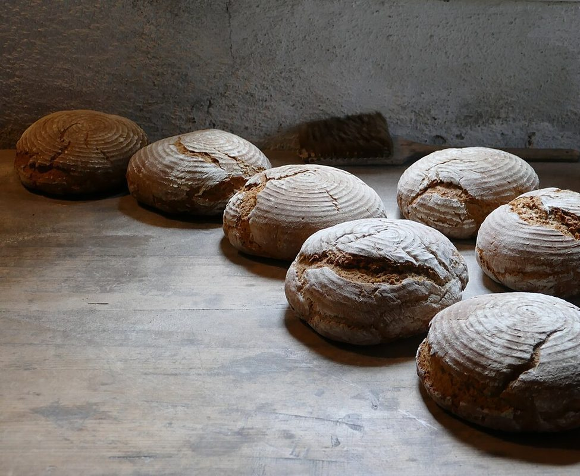

営業時間・定休日・価格: 準備中
grain to bread
粉を迎え、生地を休ませ、ゆっくりふくらませて焼く。工程の一つひとつを見守る時間が、パンの味になる。写真はそんな流れをイメージしたものです。



voice
噛むほどに麦の香りがして、朝ごはんが楽しみになりました。
素朴で飽きのこない味。山あいのドライブの帰りに寄りたくなります。
日曜に買ったパンが、翌朝もおいしくて驚きました。
上の口コミは制作側が作成したイメージ例で、実際のお客様の声ではありません。
写真はフリー素材のイメージで、国外または撮影地不明のものです。天川村や実際のお店・商品の写真ではありません。縮小・切り抜きなどの加工をしています。
ライセンスの詳細は creativecommons.org をご覧ください。
写真はフリー素材のイメージで、店舗の実際の様子ではありません。実際の店内・商品写真は貴店ご提供のものに差し替えます